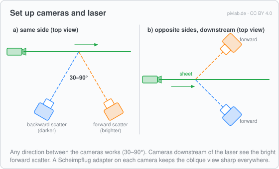
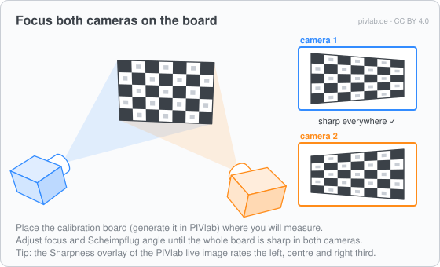
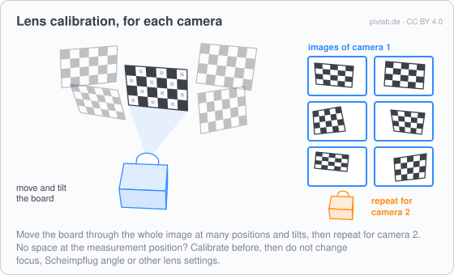
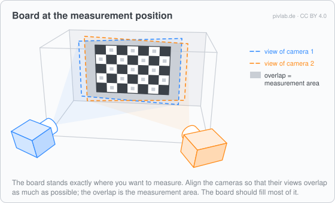
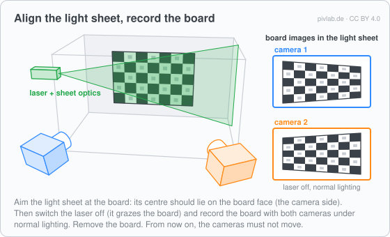

Stereo-PIV: set-up and recording
Before the analysis, the stereo-PIV experiment is set up and recorded: the cameras and the laser, the focus, the images for the calibration and the particle images. This page covers this part of the work. From the recorded images to u, v and w in PIVlab: Stereo-PIV analysis.
The whole procedure in eight drawings: How stereo-PIV works: illustrated step by step.
Overview
- Cameras and laser: two viewing directions, bright forward scatter.
- Focus both cameras on the board at the measurement position.
- Images for the lens calibration, for each camera.
- Board at the measurement position: the overlap of both views.
- Light sheet on the board, board images.
- Particle images of both cameras.
1. Cameras and laser
Both cameras look at the same part of the light sheet from different directions. What counts is the angle between the two lines of sight: 30° to 90° is good; a small angle makes w noisy. Two cameras that look at each other along one line can not measure w.
| Arrangement | Notes |
|---|---|
| Same side of the sheet (side by side, above each other, diagonal) | The usual set-up; any direction between the cameras works. |
| Opposite sides of the sheet | The camera behind the board sees it from its back: use a transparent board (or one printed mirrored on the back). PIVlab detects the mirrored board automatically. (PIVlab's board generator is optimized for printing on acrylic.) |

Each camera looks at the sheet at an angle, so a normal lens can not keep the whole sheet in focus. A Scheimpflug adapter tilts the lens against the sensor, so that the oblique plane is sharp everywhere. The board also defines the coordinate system of the result, as seen from camera 1.
2. Focus on the board
Place the calibration board (made with Generate Charuco board) at the measurement position and focus both cameras on it; with Scheimpflug adapters, adjust focus and tilt until the whole board is sharp. The Sharpness overlay of the live image rates the focus in the left, centre and right third of the image.

3. Images for the lens calibration
For each camera, record images of the board at many positions and tilts, covering the whole image. They are used for the lens calibration of that camera.

The lens calibration is only valid for these camera and lens settings. If there is no space at the measurement position, record these images beforehand; afterwards focus, Scheimpflug angle and the other lens settings must not change. The cameras themselves may still be moved.
4. Board at the measurement position
Put the board exactly where you want to measure: its surface defines the measurement plane. Align the cameras so that their views overlap as much as possible; only the overlap is measured with both cameras. The board should fill most of the overlap.

5. Light sheet on the board, board images
- Switch the laser on and aim the light sheet at the board: the centre of the sheet should lie on the board face that the cameras see.
- Switch the laser off and record the board with both cameras under normal lighting: the sheet only grazes the board and lights it badly. These are the board images in the light sheet, one per camera. Both must show the board in the same position, ideally recorded at the same moment. With stereo acquisition in PIVlab, tick Calibration to see the detected markers in both images, then Snapshot saves one image per camera.
- Remove the board. From now on the cameras must not move.

A small offset or tilt between the sheet and the board is not a problem: the disparity correction measures and corrects it on the particle images.
6. Particle images
Seed the flow and record image pairs with both cameras at the same moment, synchronized with the laser. Both cameras must give the same number of images.
- With stereo acquisition in PIVlab, both cameras get the same trigger and the recording opens directly in stereo mode.
- Images recorded with another system are imported with Import stereo images.
Next: Stereo-PIV analysis, from the images to u, v and w. To try everything without hardware, the stereo-PIV simulator creates the images of two virtual cameras, including the calibration boards.